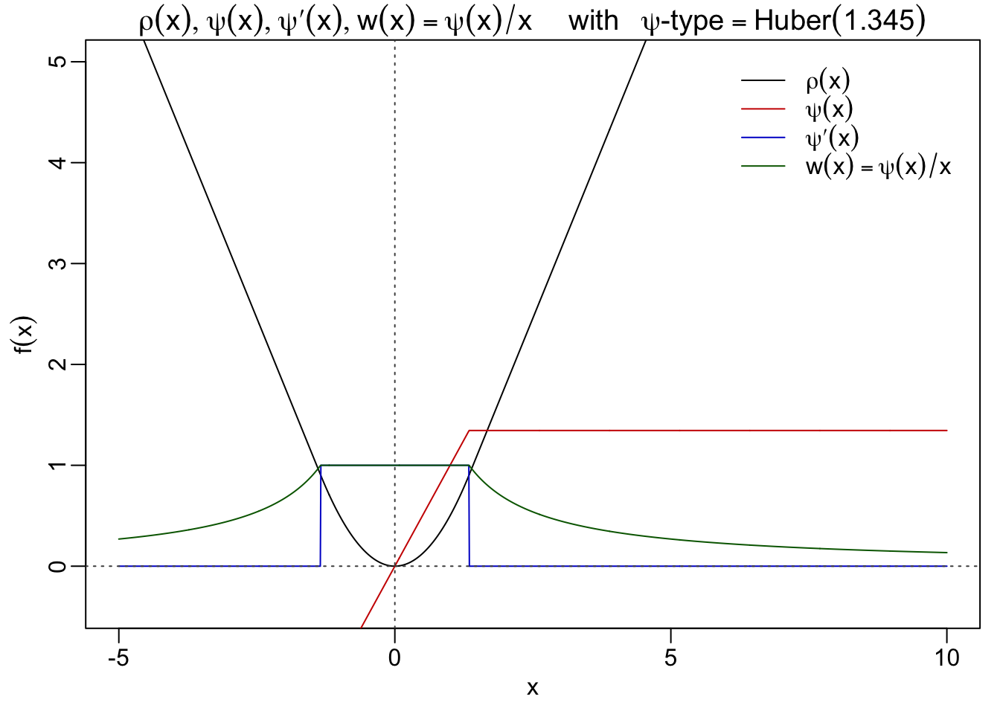
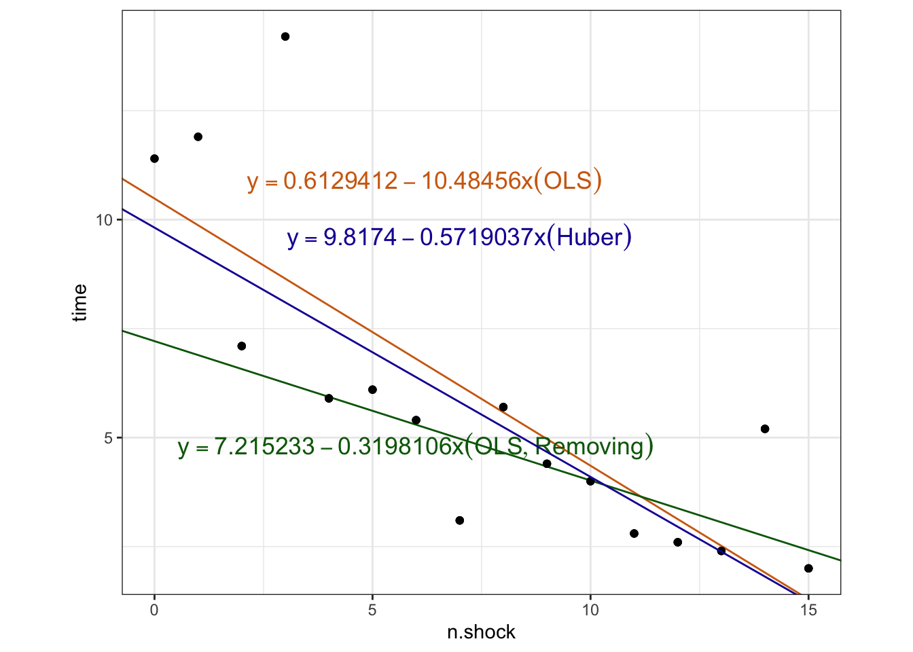
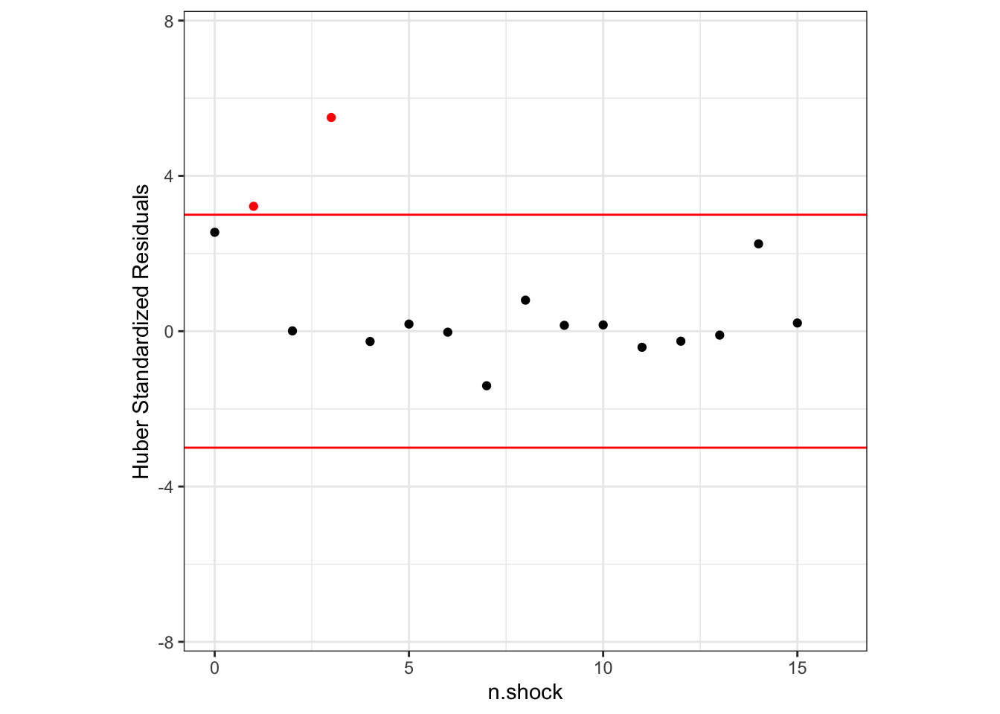
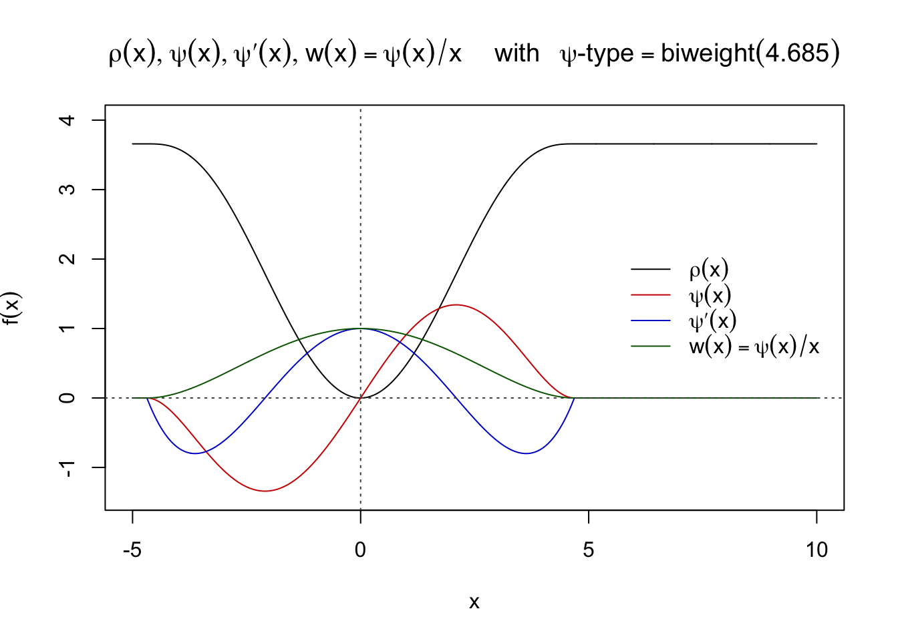
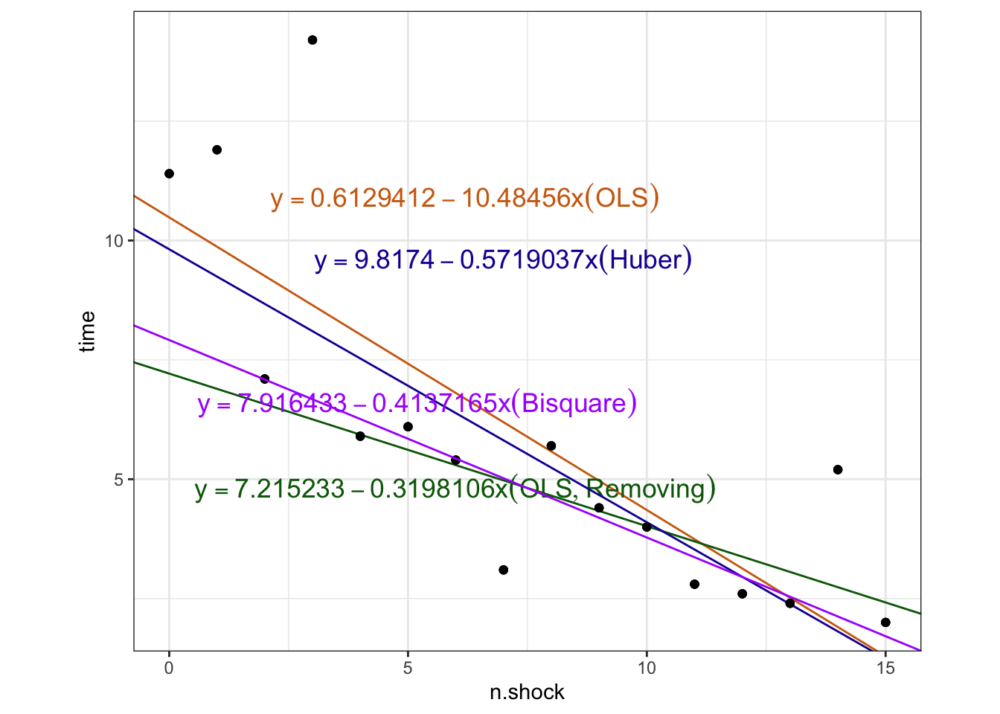
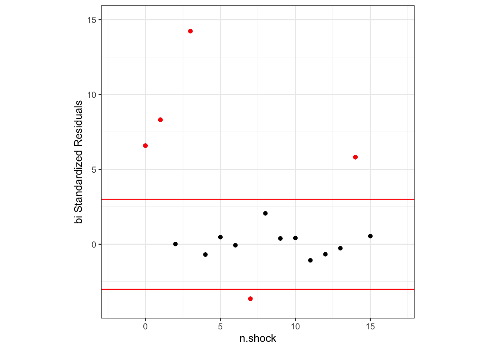
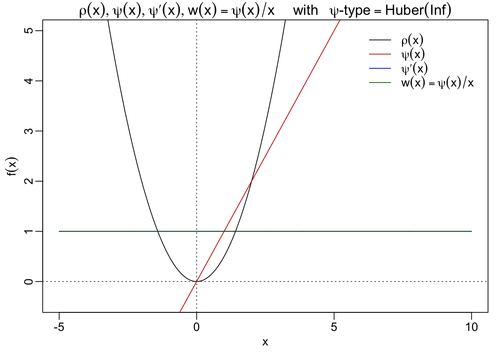
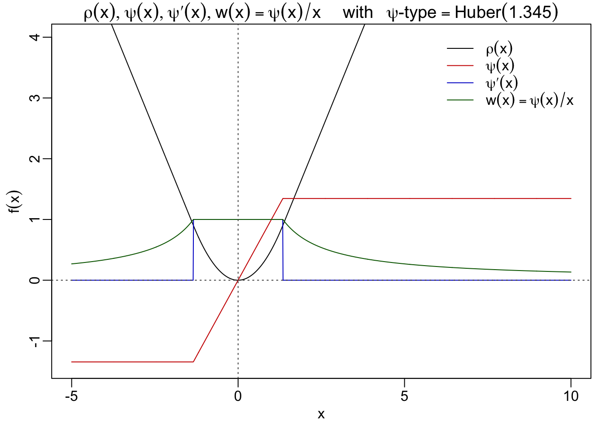

Chapter 3 Classical Robust Regression: introduction to the M-estimation
To avoid any confusion with the Robust Regression methods talked about in this chapter, we clearly declare that – in a regression problem there are two possible sources of errors, the observations \(y_i\) and the corresponding row vector of p regressors \(x_i\). Most robust methods in regression only consider the first, and in some cases (sucha as designed experiments) errors in the regressors can be ignored. This is the case for M-estimators, the only ones we consider in this chapter.
3.1 Motivation
The lack of robustness in OLS estimate is a consequence of the assumption we have made about the distribution of the random errors being normal. This translate into a minimization of the sum of the squared residuals; the model thus penalizes large residuals heavily, hence making the influence of outliers significant which leads to an inaccurate fit.
From another point of veiw, although removing 3 problematic data points, as one of the existed methods adopted by statistical analysts, leads to a greater performance result, the required subjective decisions also might pose a number of questions. Although the above example suggests a simple way, to detect and remove the outliers by the user, not everyone could recognize the suspicious points from the very beginning. Including such a query, questions could also be asked as follows:
- Which point, on earth, should be removed?
- When is an observation outlying enough to be deleted?
- What if deleting a non-outlier results in underestimating the data variability?
- How about the reliability of determining the statistical behavior of the complete procedure based on the user’s subjective decisions?
Preferably, our ideal model should be able to “detect” the outliers and reduce their influences in the fitting process automatically. The latter is even preferable to excluding outliers. Indeed, in some situations, it is not as clear as with points with n.shocks equal to 0,1, and 3 whether certain points are outliers or not. In our example, other points (e.g., the point with n.shocks equal to 7) are suspicious but it is not clear whether they are outliers or not. This renders motivation for robust models: model that are less susceptible to outliers’ influence, and prioritizes the trend of the majority of the data rather than the outliers.
“A more informal data-oriented characterization of robust methods is that they fit the bulk of the data well: if the data contain no outliers the robust method gives approximately the same results as the classical method, while if a small proportion of outliers are present the robust method gives approximately the same results as the classical method applied to the typical data.”
— from \(\textit{Robust Statistics Theory and Methods}\)
3.2 Definitions and Examples in the M-estimation
Robust regression is to use a fitting criterion that is not as vulnerable as least squares to unusual data. The most common general method of robust regression is M-estimation. We divide this section into two. The first one would talk about the origin of M-estimation and its simple but beautiful version of definition, followed by the second section introducing some famous examples in classical M-estimation and develop a final version of definition.
3.2.1 Origin and Initial Definition of M-estimators
This class of estimators can be regarded as a generalization of maximum-likelihood estimation, hence the term M-estimation. To distinguish with common estimators we refer to before, we call all the estimators derived by using M-estimation method as M-estimators.
Still consider the regression model in Genearl Model section. Let us forget about scale \(\sigma\) for a moment. That is, we assume \(\sigma\) is known and fixed. Without losing generality, we may assume \(\sigma\) = 1. The regression M-estimates \(\hat{\boldsymbol\beta}_M\) are determined by minimizing a particular objective function \(\rho\) that is
\[\begin{align} \hat{\boldsymbol\beta}_M &:=\mathop{\mathrm{argmin}}\limits_{\boldsymbol\beta}\sum_{i=1}^n\rho ( r_i ) \\ &=\mathop{\mathrm{argmin}}\limits_{\boldsymbol\beta}\ \sum_{i=1}^n\rho ( y_i -\mathbf{x}_i^T{\boldsymbol\beta}), \tag{3.1} \end{align}\]
where the objective function \(\rho\) outputs the contribution of each residual. A reasonable \(\rho\) should have the following properties:
- Always nonnegative, \(\rho(t)≥ 0\)
- Equal to zero when its argument is zero, \(\rho(t)=0\)
- Symmetric, \(\rho(t) = \rho(-t)\)
- Monotone in \(|t_i|\), \(\rho(t_i) ≥ \rho(t_{i′} )\) for \(|t_i| > |t_{i′} |\)
Equivalently, if \(\rho\) is a differentiable convex function, \(\,\hat{\boldsymbol\beta}_M\) is determined implicitly by a set of simultaneous equations in terms of influence curve \(\psi\)-function \[\psi := \rho′,\] defined as the derivative of \(\rho\). The system of p + 1 estimating equations for the coefficients is produced by differentiating the objective function (3.1) with respect to the coefficients estimate \({\boldsymbol\beta}\) and setting the partial derivatives to 0.
\[\begin{equation} \sum_{i=1}^n\psi ( y_i − \mathbf{x}^T_i \hat{\boldsymbol\beta}_M)\mathbf{x}^T_i = 0. \tag{3.2} \end{equation}\]
We define the weight function
\[\begin{align} w(t) := &\frac{\psi(t)}{t},\\ w_i = &w(r_i)=w(y_i-\mathbf{x}^T_i \hat{\boldsymbol\beta}_M)\, \tag{3.3} \end{align}\]
where \(w_i\) was denoted for short.
3.2.2 Examples and the Ultimate Definition of the M-estimators
In fact, the OLS estimates (2.13) could be viewed as a special case of M-estimation, with \(\rho\)-function \(\rho_{OLS}(t) = t^2\) satisfies these requirements. The corresponding \(\psi\)-function \(\psi_{OLS}(t)=t\), and weight function \(w_{OLS}(t)=1\). We introduce another simple but convincing criteria that consider the sum of absolute residuals (SAR)
\[\begin{align} \mathit{SAR}:= &\sum_{i=1}^n |r_i|, \\ = &\sum_{i=1}^n |y_i-\mathbf{x}_i^T \boldsymbol{\beta}|, \tag{3.4} \end{align}\]
not the sum of squared residuals, which leads to derive the least abosolute residuals (LAR) regression estimate \(\hat{\boldsymbol\beta}_{LAR}\). It is defined as:
\[\begin{equation} \hat{\boldsymbol\beta}_{LAR}:=\mathop{\mathrm{argmin}}\limits_{\beta}\sum_{i=1}^n|y_i-x_i\beta| \tag{3.5} \end{equation}\]
The corresponding \(\rho\)-function \(\rho_{LAR}(t) = |t|\), \(\psi\)-function \(\psi_{LAR}(t)=sgn(t)\), and weight function \(w_{LAR}(t)=sgn(t)/t\). Under a variety of names LAR estimate (sometimes called as L1)5 has been studied and applied by workers in several fields. Because it allows large residuals to have less impact than does OLS, the LAR estimator may seem attractive6 for robust regression. (For example, the median, its special case in estimating location, offers excellent resistance.)
In principle, we do have broad latitude in choosing the function \(\rho(x)\) and thus \(\psi(x)\) and \(w(x)\). It is easy to find that the properties of an M-estimator are essentially determined by the function \(\rho(t)\) (or, equivalently, by either \(\psi(x)\) or \(w(x)\). One important issue in choosing \(\psi\) is the balance between robustness and efficiency7. A useful principle serves well to classify the M-estimates is according to the monotonity of \(\psi\)-function. Solutions to (3.2) equations with monotone (resp. redescending) \(\boldsymbol\psi\) are called monotone (resp. redescending) regression M-estimates.
In this document, we will select and introduce Huber M-estimators as the representative of monotone regression M-estimates and Bisquare M-estimators as the redescending regression M-estimates. Specificly, the corresponding functions in Huber M-estimators are defined as
\[\begin{align} \rho_{Huber} = &\begin{cases} \frac{1}{2}t^2 \quad &|t| \leqslant k \\ k|t|-\frac{1}{2}k^2 \quad &|t|>k & \end{cases}, \\ \psi_{Huber} = &\begin{cases} t \quad\quad\quad\quad\quad &|t|\leqslant k \\ k\,sgn(t) &|t| > k \end{cases} \quad, \\ w_{Huber} = &\begin{cases} 1 \quad\quad\quad\quad\,\,\;\,&|t|\leqslant k\\ \\ k/t \quad &|t| > k &\end{cases}, \end{align}\]
where k in the Huber M-estimators is a tuning constant, which will be discussed on later. It is seen that \(\rho(t)\) is still quadratic in a central region, same with the linear regression, but increases only linearly to infinity in the tail part.
The Bisquare M-estimator, which takes on a much more aggressive approach when reducing the penalization of the outliers, as it truncates all the additional penalization of large outliers once they reach a threshold value. Also, this verifies its classification known as redescending estimators because their \(\psi\)-functions come back to \(0\) when the absolute value of the argument is greater than a specified positive number. The Bisquare estiamtors are defined as:
\[\begin{align} \rho_{\mathit{Bisquare}} &= \begin{cases}\frac{B^2}{6}\{1 -[1 - (t/B)^2 ]\} \quad &|t| \leqslant B \\ \frac{B^2}{6} \quad &|t| > B \end{cases} , \\ \psi_{\mathit{Bisquare}} &= \begin{cases} t[1-(t/B)^2]^2 \quad &|t| \leqslant B \\ 0 \quad &|t| > B \end{cases} , \\ w_{\mathit{Bisquare}} &= \begin{cases} t[1-(t/B)^2]^2 \quad &|t| \leqslant B \\ 0 \quad &|t| > B \end{cases} , \end{align}\]
where B in the Bisquare estimators is also a tuning constant. When the type of function \(\psi\) is fixed, the tuning constant determines the properties of the associated estimator, such as efficiency, influence function, and gross-error sensitivity. Take the k in the Huber-related funtions for example, the value of k is atually chosen in order to ensure a given asymptotic variance–hence a given asymptotic efficiency—-at the normal distribution.
About the tuning constant---MORE THEORIES NEEDED
I am trying to include related contents in the short future, but it is okay to have little knowledge of them.No matter what kind of M-estimators are chosen, the unavoidable mutual issue to deal with is how to efficiently compute the estimate in reality. We will continue to focus on the general computation technique to derive any kind of M-estimators.
While initially defining \({\hat{\boldsymbol{\beta}}}_{OLS}\) in (2.16) minimizing SSR or \(\hat{\boldsymbol\beta}_M\) in (3.6) and deriving the syste of estimating equations (3.2), we assumed that the error scale parameter \(\sigma\) is known and fixed, and we have often avoided showing it explicitly. In practice, however, same as how we include \(\sigma\) and try to simultaneously compute the estimate for \(\beta\) and \(\sigma\) using MLE method in (2.11), scale often must be estimated for M-estimators for the following reasons:
One reason for estimating scale is that some knowledge of it is necessary to judge the accuracy of the fitted regression model. In regression models users may want interval estimates for the \(\hat\beta_i\) or for a \(\hat{y}\), or particularly similar as this document we may need to test whether a residual is an outlier.
A second reason is that, without taking scale into account, most M-estimators of \(\boldsymbol\beta\) would not respond correctly to a change in the units of y or to \(\sigma\) change in the scale of the errors. The only familiar exceptions are the \(OLS\) estimator and the LAR estimator. Since if we take scale into account through \(\sigma\), the OLS estimator \(\hat{\boldsymbol\beta}_{OLS}\) satisfies
From now on, let us bring back the scale estimator into account through \(\sigma\), the ultimate-version definition of the M-estimators are determined as:
\[\begin{align} (\hat{\boldsymbol\beta}_M,\hat\sigma_M) :=\mathop{\mathrm{argmin}}\limits_{\beta,\sigma}&\sum_{i=1}^{n}\rho\left(r_i\right) \\ =\mathop{\mathrm{argmin}}\limits_{\beta,\sigma}&\sum_{i=1}^{n} {\rho\left(\frac{y_i-\mathbf{x}_i\boldsymbol\beta}{\sigma}\right)} \tag{3.6}. \end{align}\]
This definition would be pretty crucial in the following passasge. Out of the aim to help learners grasp the logic of M-estimation in the previous sections, we frequently changing circumstances and subjects, but it is necessary to get familiar to and accept ultimately general version of M-estimators defined in @(eq:M-def).
3.3 Theoretical Foudation of the Computing
In the one hand, without becoming enmeshed in the computational details, we still need to carefully look at some of the algorithms that have proved useful. Algorithms for M-estimators are generally iterative and thus require a starting value. It takes some matrix techniques to be illuminated to choose the iterative methods. On the other hand, for a regression model, however, obtaining a high-quality starting value presents a greater challenge than in the location problem, where the median is usually quite satisfactory. So both require the users to invest in some time studying them in a down-to-earth manner.
It is interesting to point out that, in the two cases of the OLS estimate and the LAR estimate, whose \(\rho\)-functions correspond respectively to \(\rho(t)= t^2\) and \(\rho(t)= |t|\), they do not depend on \(\sigma\) at all. Because \(\sigma\) could be taken outside the summation sign as a constant factor and minimizing the objective function in (3.6) is equivalent to minimizing \(\sum_{i=1}^n r^2\) or \(\sum_{i=1}^n |r|\), respectively. Thus neither the LS nor the L1 estimates require a scale estimate, that is also why they are always choosed as an intial regression estimate for coefficients.
\[\begin{align} \sum_{i=1}^{n}\left(\frac{y_i-\mathbf{x}_i\boldsymbol\beta}{\sigma}\right)^2 &=\frac{1}{\sigma^2}\sum_{i=1}^{n}r_i^2(\boldsymbol\beta) \propto\sum_{i=1}^{n}r_i^2(\boldsymbol\beta)=min, \\ \sum_{i=1}^{n}\left|\frac{y_i-\mathbf{x}_i\boldsymbol\beta}{\sigma}\right| &=\frac{1}{{\sigma}}\sum_{i=1}^{n}\left|{r_i(\beta)}\right| \propto \sum_{i=1}^{n} |{r_i(\beta)}| =min. \tag{3.7} \end{align}\]
Unfortunately, other M-estimators, such as Huber and Bisquare estimators, do depend on the scale parameter. So, even for estimating \(\beta\) alone, we must estimate some aspect of scale at the same time. Basically, we have two kinds of strategies for dealing with scale in the regression problem.
- Estimate \(\sigma\) beforehand.
- Estimate coefficients \(\beta\) and scale \(\sigma\) simultaneously
3.3.1 General Philosophy: Iterate and Reweight !
Firstly, let us walk through how an iterative method is inspired in estimating the M-estimates when previously we assuame \(\sigma\) is known as the constant 1. Review that replace \(\psi ( y_i − \mathbf{x}^T_i \hat{\boldsymbol\beta}_M)\) by \(( y_i − \mathbf{x}^T_i \hat{\boldsymbol\beta}_M)w_i\) in the equation(@ref:M-equation), then they could be written as
\[\begin{equation} \sum_{i=1}^n ( y_i − \mathbf{x}^T_i \hat{\boldsymbol\beta}_M)w_i\mathbf{x}^T_i = 0. \tag{3.8} \end{equation}\]
Rearrangement of equation yields
\[\begin{align} \sum_{i=1}^n \mathbf{x}^T_i \hat{\boldsymbol\beta}_M w_i\mathbf{x}^T_i &= \sum_{i=1}^n y_i w_i\mathbf{x}^T_i \,, \\\\ \sum_{i=1}^n w_i\mathbf{x}^T_i \mathbf{x}^T_i \hat{\boldsymbol\beta}_M &= \sum_{i=1}^n w_i\mathbf{x}^T_i y_i \,,\\\\ \begin{bmatrix} \mathbf{x}_1 \ldots \mathbf{x}_n \end{bmatrix} \begin{bmatrix} w_{1} & & \\ & \ddots & \\ & & w_{n} \end{bmatrix} \begin{bmatrix} \mathbf{x}_1^T \\ \vdots\\ \mathbf{x}_n^T\\ \end{bmatrix} \begin{bmatrix} 1\\ {\hat{\mathbf{\beta}}_1}_M \\ \vdots\\ {\hat{\mathbf{\beta}}_p}_M\\ \end{bmatrix} &= \begin{bmatrix} \mathbf{x}_1 \ldots \mathbf{x}_n \end{bmatrix} \begin{bmatrix} w_{1} & & \\ & \ddots & \\ & & w_{n} \end{bmatrix} \begin{bmatrix} {y}_1\\ \vdots\\ {y}_n\\ \end{bmatrix}\,, \\\\ \hat{\boldsymbol\beta}_M &= [\mathbf{X}^T\mathbf{W}\mathbf{X}]^{-1}\mathbf{X}^T\mathbf{W}\mathbf{y},\\\\ where\; we\;denote\;the\;matrix \begin{bmatrix} w_{1} & & \\ & \ddots & \\ & & w_{n} \end{bmatrix} &= \,\mathbf{W}. \end{align}\]
Hence in the iterative process, we analyze the relationship between two consecutive iterations \(t\) and \(t+1\) through \[\begin{align} \hat{\boldsymbol\beta}_M^{(t+1)} &= [\mathbf{X}^T\mathbf{W}^{(t)}\mathbf{X}]^{-1}\mathbf{X}^T\mathbf{W}^{(t)}\mathbf{y},\\\\ while\;\hat{\boldsymbol\beta}_M^{(t)} &= [\mathbf{X}^T\mathbf{W}^{(t)}\mathbf{X}]^{-1}\mathbf{X}^T\mathbf{W}^{(t)}\mathbf{X} \hat{\boldsymbol\beta}_M^{(t)}, \\\\ so\; \hat{\boldsymbol\beta}_M^{(t+1)} &= \hat{\boldsymbol\beta}_M^{(t)} +[\mathbf{X}^T\mathbf{W}^{(t)}\mathbf{X}]^{-1}\mathbf{X}^T\mathbf{W}^{(t)} (\mathbf{y}-\mathbf{X}\hat{\boldsymbol\beta}_M^{(t)}). \end{align}\]
Solving the estimating equations in (3.8) inspires us to adopt an iterative strategy to compute the M-estimators, because the weights, however, depend upon the residuals, the residuals depend upon the estimated coefficients, and the estimated coefficients depend upon the weights. An solution called Iteratively Reweighted Least Squares (IRLS) is therefore required:
- Select initial estimates \(\hat{\boldsymbol\beta}_M^{(0)}\), such as the \(LAR\) or \(OLS\) estimates. In usual, people sometimes call the initial values Starting Points, whose quality is actually very important for the ultimate converged result. We will see the large difference between different starting points in the later part
- At each iteration t, calculate residuals \(r_i^{(t−1)}\) and associated weights \(w^{(t−1)} = w(r_i^{(t−1)})\) from the previous iteration.
- Solve for new weighted-least-squares estimates \({\boldsymbol\beta}_M^{(t)} = [\mathbf{X}^T\mathbf{W}^{(t−1)}\mathbf{X}]^{-1}\mathbf{X}^T\mathbf{W}^{(t−1)}\mathbf{y}.\)
- Steps 2 and 3 are repeated until the estimated coefficients converge.
The \(\mathbf{X}\) is the model matrix, with \(\mathbf{x_i}^T\) as its \(i\)th row, and \(W^{(t−1)} = diag\{w_i^{(t−1)}\}\) is the current weight matrix.
One thing to add, actually there are other algorithms like Newton-Raphson Method or Huber’s Method. But to save for space, we might not thoroughly talk about them in this document. To have a bite of what Huber proposed, another iterative version is supplied below
\[\begin{align} \hat{\boldsymbol\beta}^{(t+1)} &= (\mathbf{X}^T\mathbf{X})^{-1}\mathbf{X}^T\mathbf{y} \\ &= (\mathbf{X}^T\mathbf{X})^{-1}\mathbf{X}^T( \mathbf{\hat{y}} + \mathbf{y} - \mathbf{\hat{y}}) \\ &= \hat{\boldsymbol\beta}^{(t)} + (\mathbf{X}^T\mathbf{X})^{-1}\mathbf{X}^Tr^{(t)} ,\\ where \; r^{(t)} &= \psi(r^{(t)}/\hat\sigma) \hat\sigma \end{align}\]
Basically, if taking scale estimator into consideration, we have two kinds of strategies for dealing with scale in the regression problem. * Estimate \(\sigma\) beforehand. * Estimate coefficients \(\beta\) and scale \(\sigma\) simultaneously
3.3.2 Estimate \(\sigma\) beforehand
This actually corresponds to the IRLS algorithm we mentioned previously when we assume that the \(\sigma\) is known and fixed as \(1\). In pracitce, we have to choose an initial scale estimator and calculate its value, \(\hat\sigma\). The recommended procedure to get the most commonly used resistant scale estimator is first to compute the \(LAR\) fit and from it obtain the analog of the normalized median absolute deviation (MAD) by taking the median of the nonnull absolute residuals: \[ \hat\sigma= \frac{1}{0.675} Med_i\left(|ri| \quad |ri \neq 0\right),\\ or\quad\hat\sigma= \frac{1}{0.675} Med_i\left(|ri - Med_j(r_j)|\right),\\ r_t=y_t-\mathbf{x_t}\hat{\boldsymbol\beta}^{(0)},\;t \in \{i,j\}, \]
where \(\hat{\boldsymbol\beta}^{(0)}\) is a preliminary estimate of \(\boldsymbol\beta\) and 0.675 is the average value of the MAD for samples from the standard Gaussian distribution. What we still need here is an intial estimate for \(\beta\). Usually, as we mentioned beofre, the \({LAR}\) estimate \(\hat\beta_{LAR}\) is a convenient choice for \(\hat{\boldsymbol\beta}_M^{(0)}\). An important reason for the widespread use of the MAD is its excellent resistance: its breakdown bound is nearly 50%. The MAD has also proved to be a reasonably robust estimator of scale.
THE BOOK GIVES ？SEEMINGLY DIFFERENT NMAD FOR REGRESSIOIN PROBLEM IN THE SAME SETTING.Sometimes we make the role of the tuning constant explicit by writing \[\psi_0\left(\frac{y_i-\mathbf{x}_i{\boldsymbol\beta}}{c\hat\sigma}\right),\] where c is a generic tuning constant and \(\psi_0\) is the member of the particular family of \(\psi\)-functions that has tuning constant 1 (e.g., the Huber \(\psi\)-function with k = 1). Then, in discussing a choice of tuning constant, we must be careful to state whether \(\sigma\) involves any standardizing constants, such as the 1/0.6745 in equation. Some discussions in the literature normalize MAD in this way, but others do not.
Then, we could consider \(\sigma\) as a known and fixed constant, we proceed with M-estimation for \(\boldsymbol\beta\); that is, we redifine \(\hat{\boldsymbol\beta}_M\) as
\[ \hat{\boldsymbol\beta}_M:=\mathop{\mathrm{argmin}}\limits_{\beta} {\rho\left(\frac{y_i-\mathbf{x}_i\boldsymbol\beta}{\hat\sigma}\right)}, \\ which\;satisfies\; \sum_{i=1}^n\psi\left( \frac{y_i-\mathbf{x}_i\hat{\boldsymbol\beta}_M}{\hat\sigma} \right)\mathbf{x}_i^T = \mathbf{0}. \] Now it is obvious that we could again follow the \(\mathit{IRLS}\) steps to ultimately compute the M-estimates. A slight difference should be paid attention to is that \(\mathbf{W}^{(t)}\) is the new diagonal matrix with diagonal elements
\[w_i= \frac { \psi (r_i / {\hat\sigma}) } {r_i / {\hat\sigma} },\] distinguished with \(w_i= \frac { \psi (r_i) } {r_i }.\) But the general recurrence relation
\[\hat{\boldsymbol\beta}_M^{(t+1)} = \hat{\boldsymbol\beta}_M^{(t)}+[\mathbf{X}^T\mathbf{W}^{(t)}\mathbf{X}]^{-1}\mathbf{X}^T\mathbf{W}^{(t)} (\mathbf{y}-\mathbf{X}\hat{\boldsymbol\beta}_M^{(t)})\] is the same.
3.3.3 Estimate Coefficients \(\beta\) and Scale \(\sigma\) Simultaneously
Again paralleling the previous estimation approach, we can set up an equation for scale that is compatible with the p simultaneous equations for \(\boldsymbol\beta\) in (??). Solving the resulting system of p+1 equations then yields simultaneous M-estimators of \(\boldsymbol\beta\) and \(\sigma\). Specifically, these simultaneous equations take the form
\[\begin{equation} \sum_{i=1}^{n}\psi(\frac{r_i(\hat{\boldsymbol{\beta})}}{\sigma}) \boldsymbol{x_i}=\textbf{0},\\ \sum_{i=1}^{n}\chi(\frac{r_i(\hat{\boldsymbol{\beta})}}{\sigma}) \boldsymbol{x_i}=n\lambda , \#(eq:simul) \end{equation}\]
where \(\chi\) is an even function, such as \(\psi(t)^2\) or \(t\psi(t)\), and \(\lambda\) is a suitable positive constant.
To motivate the scale equation, we note that we could make \(\sum_{i=1}^{n} {\rho\left(\frac{y_i-\mathbf{x}_i\boldsymbol\beta}{\sigma}\right)}\) as small as desired by simply allowing \(\sigma\) to become large enough. The last equation in (***) rules out such nonsensical values of \(\sigma\). As Huber (1981, p. 176) points out, if \(\psi\) and \(\chi\) above are totally unrelated, there will be trouble with existence and convergence proofs for the simultaneous M-estimators. He avoids these difficulties by relating \(\chi\) to \(\rho\) and \(\psi\) through
\[ \chi(t) = t\psi(t)-\rho(t) = \begin{cases} \frac{1}{2}t^2, \;for\,|t| \leqslant k, \\ \frac{1}{2}k^2, \;for\,|t| > k. \end{cases} \]
We note that this formulation yields both a bounded \(\psi\)-function and a bounded \(\chi\)-function, thus limiting the impact of a large residual on both the regression estimate and the scale estimate. At last, we give without proof the iterative relation equation when simultaneously computing both coefficients estimate and scale estimate:
\[\begin{equation} (\sigma^{(t+1)})^2 = \sum_{i=1}^n \chi \left( \frac{y_i - \mathbf{x}_i \hat{\boldsymbol{\beta}}^{(t)} } {\sigma^{(t)}} \right){(\sigma^{(t)})}^2, \\ \hat{\boldsymbol\beta}_M^{(t+1)} = \hat{\boldsymbol\beta}_M^{(t)}+(\mathbf{X}^T\mathbf{W}^{(t)}\mathbf{X})^{-1}\mathbf{X}^T\mathbf{W}^{(t)} (\mathbf{y}-\mathbf{X}\hat{\boldsymbol\beta}_M^{(t)}). \end{equation}\]
3.3.4 Starting Value
With any iterative method, choosing the starting value is an important issue. From a good starting value, a procedure will converge in fewer iterations and incur less computational cost. Iterative M-estimators are particularly sensitive to the starting value when the \(\psi\)-function redescends. Given a poor starting value, an estimator with a non-monotone \(\psi\)-function may converge to a root of equation @ref{eq:M-def} far from the overall minimum of the objective function in terms of \(\beta\).
Usually we prefer a (Starting value to be resistant and have high efficiency. In the location problem, the sample median is considered the best convenient choice. Its natural generalization to regression models appears to be the LAR estimator. Harvey (1977) compared the LAR estimator with two other approaches, suggested, by Andrews (1974) and Hinich and Talwar (1975), respectively. The LAR estimator may be the most attractive preliminary estimator, because it has, on the whole, higher asymptotic efficiency than the other two. On the other hand, the LAR estimator may take too much computing time to be used solely as a starting value. It need not be unique, and it is even harder to calculate than most of the robust regression estimators that we intend to use.
If the \(\psi\)-function is monotone, the OLS estimator is still a conceivable choice. There is no trouble with convergence, the OLS estimator is easy to calculate, and almost every user wants to know the OLS results and compare them with the robust estimates.
For a redescending, \(\psi\)-function, besides starting with the LAR estimator of \(\beta\), we can also recommend the following strategy: Use a monotone ψ-function with the OLS estimates as the starting value, iterate to convergence, and then use the non-monotone ψ\(\psi\)-function to iterate a few steps (perhaps only one) further.
As we have mentioned before, if \(\beta\) and \(\sigma\) are estimated simultaneously, only the combination of equations (32) and (33) is known to ensure convergence. For this iteration scheme, both the OLS estimates and the LAR estimates are good choices as starting values. It is usually preferable to start with the OLS estimates and then, after iterating to convergence with a Huber \(\psi\)-function and \(\chi\)-function, to do a few iterations with a redescending \(\psi\)-function and either a fixed \(\sigma\) obtained from equation (32) in the Huber iterations or the MAD or fourth-spread of the residuals.
A lot of work to be done to fully understand something internal.
3.4 Robust Regression Experiment
Now let’s do not hesitate any longer to try the robust regression in real data set. Robust regression is done by \(IRLS\) introduced before. Although the theoretical part is seemingly complex, the command for running robust regression rlm was well developed in the MASS package. There are several weighting functions that can be used for \(IRLS\). We are going to first only focus on the performance of the Huber M-estimators and then the Bisuqre M-estimators in the shock example. In paticular, we will later revisit the OLS estimators and conduct analysis and comparisons with attempts to explain why the classical one is not robust, and hope to gain some new ideas.
library(MASS)3.4.1 Monotone M-estimator: Huber Estimator
For strengthening our impression on Huber M-estimators, we plot all the \(\rho\) to \(\rho\) and \(w\) functions for Huber M-estimators in the same figure. 
We use k = 1.345 to analyze the data set shock using Huber-M linear regression. By solving (3.6), we obtain the estimated value for \(\hat{\boldsymbol\beta}_{Huber}\) and \(\hat\sigma_{Huber}\) to be approximately (9.82,−0.57) and 1.37.
rlm.huber<-rlm(data =shock.original,time~ n.shocks, psi = psi.huber,k2 = 1.345)
beta0.huber<-unname(rlm.huber$coefficients[c("(Intercept)","n.shocks")])[1]
beta1.huber<-unname(rlm.huber$coefficients[c("(Intercept)","n.shocks")])[2]
summary(rlm.huber)##
## Call: rlm(formula = time ~ n.shocks, data = shock.original, psi = psi.huber,
## k2 = 1.345)
## Residuals:
## Min 1Q Median 3Q Max
## -2.7141 -0.8899 -0.1843 0.9665 6.0983
##
## Coefficients:
## Value Std. Error t value
## (Intercept) 9.8174 0.8777 11.1860
## n.shocks -0.5719 0.0997 -5.7366
##
## Residual standard error: 1.367 on 14 degrees of freedomDraw another fitted line alongside with other estimators. 
Sorrowfully, Huber estimates does not perform very well here. Despite also reflecting the downward trend, the fit shown above is also inaccurate, as it hovers between the outliers of the top left corner and the majority of the points.

In residuals’ analysis, the result showed when using Huber estimators indeed proves a slight improvement rendered by recoginizing two outliers, entries equal to 1 and 3. But it still fails to recognize data entry with n.shocks equal to 0 as outlier, only to detect out the entry with the comparatively large residuals, hence is still heavily influenced by outliers.
huber## function (y, k = 1.5, tol = 1e-06)
## {
## y <- y[!is.na(y)]
## n <- length(y)
## mu <- median(y)
## s <- mad(y)
## if (s == 0)
## stop("cannot estimate scale: MAD is zero for this sample")
## repeat {
## yy <- pmin(pmax(mu - k * s, y), mu + k * s)
## mu1 <- sum(yy)/n
## if (abs(mu - mu1) < tol * s)
## break
## mu <- mu1
## }
## list(mu = mu, s = s)
## }
## <bytecode: 0x7fa36543d548>
## <environment: namespace:MASS>To argue for Huber M-estimators here, with larger amount of observations available, Huber M-estimators usually perform better. However, given that we only have 16 entries in shock, and at least 3 of the entries are outliers, Huber M-estimator, which penalizes relatively strongly large residuals using a linearly increasing penalty, still significantly adjusts for them, leading to somewhat of an inaccurate fit. 3.4.2 Redescending M-estimator: Bisquare Estimator
Similarly, we also plot the corresponding \(\psi\), \(\rho\), \(w\) functions for Bisquare Estimators in the same figure.

When applying Bisquare M-estimator on the data set shock, we use \(k=1.548\). Similarly by solving (3.6) with the corresponding functions changed, we obtain the estimated value for \(\hat{\boldsymbol\beta}_{Bisquare}\) and \(\hat\sigma_{Bisquare}\) to be approximately (7.92, −0.41) and 0.53.
#fit the model using Bisquare M-estimator, get the new estimates for the beta
rlm.bi<-rlm(data=shock, time~ n.shocks, psi = psi.bisquare)
beta0.bi<-unname(rlm.bi$coefficients[c("(Intercept)","n.shocks")])[1]
beta1.bi<-unname(rlm.bi$coefficients[c("(Intercept)","n.shocks")])[2]
summary(rlm.bi)##
## Call: rlm(formula = time ~ n.shocks, data = shock, psi = psi.bisquare)
## Residuals:
## Min 1Q Median 3Q Max
## -1.9204 -0.1915 0.2139 1.5889 7.5247
##
## Coefficients:
## Value Std. Error t value
## (Intercept) 7.9164 0.3202 24.7219
## n.shocks -0.4137 0.0364 -11.3738
##
## Residual standard error: 0.5289 on 14 degrees of freedomThe Bisquare M-estimator fit is shown below, alongside other estimators discussed before: 
The Bisquare M-estimator provides a relatively accurate fit, giving the same, if not better, level of accuracy as the normal linear regression fit with the outliers removed.
As it is shown in the standardized residuals plot for Bisquare M-estimator, according to the Bisquare M-estimator and the three sigma rule mentioned in the very first experiment, there are 5 data points that are flagged as potential outliers, namely data entry with equal to \(0, 1, 3, 7\), and 14. Although the estimator is likely correct in identifying data entries with equal to \(0,1\), and 3 as outliers, the other two flagged data entries, despite having a large standardized residual, are likely the result of variance of the data and should not be flagged as outliers. Thus, although Bisquare M-estimator provides a very good fit for the majority of the data set, it runs the potential risk of under-penalization, which may lead to discrimination against good data entries and flagging these good data entries as outliers.


Both the least-squares and Huber objective functions increase without bound as the residual \(r_i\) departs from 0, but the least-squares objective function increases more rapidly. In contrast, the bisquare objective function levels eventually levels off (for \(|r_i| \neqslant k\)). Least-squares assigns equal weight to each observation; the weights for the Huber estimator decline when |t| > k; and the weights for the bisquare decline as soon as e departs from 0, and are 0 for |t| > k.
Refering to the textbook, the advantages and disadvantages of Monotone and Redescending M-estimators could summarized as follows:
| Scenarios | Monotone | Redescending |
|---|---|---|
| Solution to the estimating Equations | All solutions of \(\psi\)-equation are solutions of \(\rho\)-equation. If \(\psi\) is increasing then the solution is unique. | The estimating equation may have “bad” roots. |
| Trade-off between robustness and efficiency | worser | better |
| Starting Point | Does not require one | Requires one( mainly use monotone to begin) |
3.4.3 Revisit to the OLS and Comparison
Now let us revisit the \({OLS}\) estimate, a special type of M-estimation as we proved before, and try to compare with other M-estimators to reveal the reasons why why OLS estimates badly distorted in the presence of outliers— maybe even might inspire users to design and create more robust method based on our exploration. To have a clearer view of each estimator, we could summarize the respective \(\rho\)-function, \(\psi\)-function, and weight function \(w\) as follows:
| Estimator | \(\rho(t)\) | \(\psi(t)\) | \(w(t)\) | Range of \(t\) |
|---|---|---|---|---|
| \(\mathit{OLS}\) | \(\frac{1}{2}t^2\) | \(t\) | \(1\) | \(|t|< \infty\) |
| \(\mathit{LAR}\) | \(|t|\) | \(sgn(t)\) | \(\frac{sgn(t)}{t}\) | \(|t|< \infty\) |
| \(\mathit{Huber}\) | \(\begin{cases}\frac{1}{2}t^2 \\ k|t|-\frac{1}{2}k^2 \end{cases}\) | \(\begin{cases} t \\ k\,sgn(t) \end{cases}\) | \(\begin{cases} 1 \\ \frac{k}{{t}} \end{cases}\) | \(|t| \leqslant k \\ |t| > k\) |
| \(\mathit{Bisquare}\) | \(\begin{cases}\frac{B^2}{6}\{1 -[1 - (t/B)^2 ]\} \\ \frac{B^2}{6} \end{cases}\) | \(\begin{cases} t[1-(t/B)^2]^2 \\ 0 \end{cases}\) | \(\begin{cases} t[1-(t/B)^2]^2 \\ 0 \end{cases}\) | \(|t| \leqslant B \\ |t| > B\) |
When comparing the objective functions, both the OLS and Huber objective functions increase without bound as the residual \(r_i\) departs from 0, but the OLS objective function increases more rapidly. In contrast, the Bisquare objective function levels eventually levels off (for \(|t| \geq k\)). As for weight functions, we see that OLS assigns equal weight to each observation in 3.1; while in the Huber M-estimators’ table 3.2, the weights for the Huber estimator decline when |t| > k; and the weights for the Bisquare decline as soon as e departs from 0, and are 0 for |t| > B in Bisquare M-estimators’ table 3.3. Particularly in this document, we could clearly see this in
| n.shocks | time | residuals | ols.standardized.residuals | weights |
|---|---|---|---|---|
| 0 | 11.4 | 0.9154412 | 0.4055899 | 1 |
| 1 | 11.9 | 2.0283824 | 0.8986829 | 1 |
| 2 | 7.1 | -2.1586765 | -0.9564102 | 1 |
| 3 | 14.2 | 5.5542647 | 2.4608391 | 1 |
| 4 | 5.9 | -2.1327941 | -0.9449429 | 1 |
| 5 | 6.1 | -1.3198529 | -0.5847661 | 1 |
| 6 | 5.4 | -1.4069118 | -0.6233379 | 1 |
| 7 | 3.1 | -3.0939706 | -1.3707960 | 1 |
| 8 | 5.7 | 0.1189706 | 0.0527104 | 1 |
| 9 | 4.4 | -0.5680882 | -0.2516938 | 1 |
| 10 | 4.0 | -0.3551471 | -0.1573493 | 1 |
| 11 | 2.8 | -0.9422059 | -0.4174481 | 1 |
| 12 | 2.6 | -0.5292647 | -0.2344928 | 1 |
| 13 | 2.4 | -0.1163235 | -0.0515376 | 1 |
| 14 | 5.2 | 3.2966176 | 1.4605796 | 1 |
| 15 | 2.0 | 0.7095588 | 0.3143729 | 1 |
see table 3.2
| n.shocks | time | huber.residuals | huber.standardized.residuals | class | huber.weights |
|---|---|---|---|---|---|
| 3 | 14.2 | 7.5247165 | 5.5040536 | outlier | 0.3015350 |
| 14 | 5.2 | 3.0755980 | 2.2496869 | bulk | 0.5425355 |
| 7 | 3.1 | -1.9204175 | -1.4047148 | bulk | 0.6774573 |
| 1 | 11.9 | 4.3972835 | 3.2164513 | outlier | 0.6927772 |
| 0 | 11.4 | 3.4835670 | 2.5481013 | bulk | 1.0000000 |
| 2 | 7.1 | 0.0110000 | 0.0080461 | bulk | 1.0000000 |
| 4 | 5.9 | -0.3615670 | -0.2644730 | bulk | 1.0000000 |
| 5 | 6.1 | 0.2521495 | 0.1844381 | bulk | 1.0000000 |
| 6 | 5.4 | -0.0341340 | -0.0249678 | bulk | 1.0000000 |
| 8 | 5.7 | 1.0932990 | 0.7997080 | bulk | 1.0000000 |
| 9 | 4.4 | 0.2070155 | 0.1514242 | bulk | 1.0000000 |
| 10 | 4.0 | 0.2207320 | 0.1614573 | bulk | 1.0000000 |
| 11 | 2.8 | -0.5655515 | -0.4136801 | bulk | 1.0000000 |
| 12 | 2.6 | -0.3518350 | -0.2573544 | bulk | 1.0000000 |
| 13 | 2.4 | -0.1381185 | -0.1010286 | bulk | 1.0000000 |
| 15 | 2.0 | 0.2893145 | 0.2116229 | bulk | 1.0000000 |
We can roughly see that in Huber’s table, as the absolute residual goes up, the weight goes down. In other words, data points with a larger residual tend to be down-weighted MORE, which we commonly call this phenomenon as penalization. While when suspicious data points with large residual, however, could not be recognized as outliers due to harsh objective function, it could be called as over penalization, or at lease very harsh objective function. That for sure is not what we desire, since we need an accurate estimate for regression coefficients and scale, which is almost needed in conducting any any statistical inference.
While in OLS regression, all cases have a weight of 1, hence the more points in a robust regression that have a weight close to one, the closer the results of the OLS and robust regressions. Both as showed before penalize large residuals comparatively too harsh and hinder any statistical analysis like outlier detection and prediction.So closeness for sure is not what we desire, since it implicitly conveys that it will lead to much improvement in the presence of outliers, just as in our case Huber only renders a diminutive improvement.
Sadly in this document, the Huber estimation behaves actually quite similar to OLS, which could not be regarded as an ideal robust method. Since what users should expect is that the results are very different, since the large differences always suggest that the model parameters are being highly influenced by outliers, and hence users should most likely use the results from the robust regression.
In other words, both Huber and OLS penalizes the large residuals too harsh and fails to differentiate some outliers from the general trend. Namely, change made from quadratic to linear by Huber M-estimator in the tail part is still, in a way, too influential.
Next, let’s pay more attention to the performance of the other robust method, Bisquare estimation. Again, we can look at the weights. We can see when using the bisquare weighting function, the data points with entries equal to 0, 1, 3, 14 are dramatically lower than using the Huber weighting function. Not surprisingly, the 3 suspicious points, which are subjectively removed by us at the very beginning, are directly down weighted to zero. How fabulous is the the Bisquare esimation method!
| n.shocks | time | bi.residuals | bi.standardized.residuals | class | bi.weights |
|---|---|---|---|---|---|
| 0 | 11.4 | 3.4835670 | 6.5860809 | outlier | 0.0000000 |
| 1 | 11.9 | 4.3972835 | 8.3135663 | outlier | 0.0000000 |
| 3 | 14.2 | 7.5247165 | 14.2263352 | outlier | 0.0000000 |
| 14 | 5.2 | 3.0755980 | 5.8147690 | outlier | 0.0000000 |
| 7 | 3.1 | -1.9204175 | -3.6307684 | outlier | 0.1594929 |
| 8 | 5.7 | 1.0932990 | 2.0670065 | bulk | 0.6486165 |
| 11 | 2.8 | -0.5655515 | -1.0692396 | bulk | 0.8985277 |
| 4 | 5.9 | -0.3615670 | -0.6835837 | bulk | 0.9578510 |
| 12 | 2.6 | -0.3518350 | -0.6651842 | bulk | 0.9600840 |
| 15 | 2.0 | 0.2893145 | 0.5469821 | bulk | 0.9729223 |
| 5 | 6.1 | 0.2521495 | 0.4767174 | bulk | 0.9794143 |
| 10 | 4.0 | 0.2207320 | 0.4173190 | bulk | 0.9841999 |
| 9 | 4.4 | 0.2070155 | 0.3913864 | bulk | 0.9860976 |
| 13 | 2.4 | -0.1381185 | -0.2611288 | bulk | 0.9937954 |
| 6 | 5.4 | -0.0341340 | -0.0645342 | bulk | 0.9996187 |
| 2 | 7.1 | 0.0110000 | 0.0207968 | bulk | 0.9999615 |
All in all, different functions have advantages and drawbacks. Huber weights can have difficulties with severe outliers, and bisquare weights can have difficulties converging or may yield multiple solutions. In this Definitions section, we introduced the framework of the M-estimators and discussed two examples of M-estimators in Huber M-estimator and Bisquare M-estimator. In the next chapter, we propose another M-estimator, which provides a more strict penalization than the constant valued penalization of the Bisquare M-estimator, but a less harsh penalization than that of the linear penalization of Huber M-estimator. To give a more complete introduction to some modified techniques emerging in recent years, particularly the fabulous work done by Professor Gagnon, we might end the general Robust Regression Section{#3} here, and let’s move to next chapter.
library(ggplot2)Since the objective function for L1 is actually L-1 norm.↩︎
Unfortunately, high-leverage observations can cause the LAR estimator to break down. It may still be convenient, however, to use \(\mathtt{LAR}\) estimates as starting values for other, more robust regression procedures.↩︎
Another huge topic need to be filled with↩︎